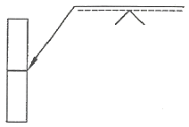
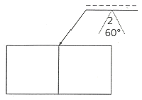
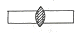
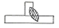
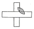
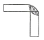

용접산업기사 (2015-05-31 기출문제)
1과목: 용접야금 및 용접설비제도
1. 습기제거를 위한 용접봉의 건조 시 건조온도가 가장 높은 것은?
- 일미나이트계
- 저수소계
- 고산화티탄계
- 라임티탄계
(정답률: 89%)

2. 연화를 목적으로 적당한 온도까지 가열한 다음 그 온도에서 유지하고 나서 서랭하는 열처리 법은?
- 불림
- 뜨임
- 풀림
- 담금질
(정답률: 70%)
3. 용접부의 노내 응력 제거 방법에서 가열부를 노에 넣을 때 및 꺼낼 때의 노내 온도는 몇 ℃ 이하로 하는가?
- 300℃
- 400℃
- 500℃
- 600℃
(정답률: 79%)
4. 순철에서는 A2변태점에서 일어나며 원자 배열의 변화 없이 자기의 강도만 변화 되는 자기변태의 온도는?
- 723℃
- 768℃
- 910℃
- 1401℃
(정답률: 72%)
5. 합금을 함으로써 얻어지는 성질이 아닌 것은?
- 주조성이 양호하다.
- 내열성이 증가한다.
- 내식, 내마모성이 증가한다.
- 전연성이 증가되며, 융점 또한 높아진다.
(정답률: 63%)
6. 실용 주철의 특성에 대한 설명으로 틀린 것은?
- 비중은 C와 Si 등이 많을수록 작아진다.
- 용융점은 C와 Si 등이 많을수록 낮아진다.
- 흑연편이 클수록 자기 감응도가 나빠진다.
- 내식성 주철은 염산, 질산 등의 산에는 강하나 알칼리에는 약하다.
(정답률: 62%)
7. Fe3C에서 Fe의 원자비는?
- 75%
- 50%
- 25%
- 10%
(정답률: 79%)
8. 용접금속에 수소가 침입하여 발생하는 것이 아닌 것은?
- 은점
- 언더컷
- 헤어 크랙
- 비드 밑 균열
(정답률: 78%)
9. 응력제거 풀림처리 시 발생하는 효과가 아닌것은?
- 잔류응력을 제거한다.
- 응력부식에 대한 저항력이 증가한다.
- 충격저항과 크리프 저항이 감소한다.
- 온도가 높고 시간이 길수록 수소함량은 낮아진다.
(정답률: 67%)
10. 연강용접에서 용착금속의 샤르피(Charpy)충격치가 가장 높은 것은?
- 산화철계
- 티탄계
- 저수소계
- 셀룰로스계
(정답률: 62%)
11. 기계제도에서 선의 종류별 용도에 대한 설명으로 옳은 것은?
- 가는 2점 쇄선은 특별한 요구사항을 적용할 수 있는 범위를 표시한다.
- 가는 파선은 중심이 이동한 중심궤적을 표시한다.
- 굵은 실선은 치수를 기입하기 위하여 쓰인다.
- 가는 1점 쇄선은 위치 결정의 근거가 된다는 것을 명시할 때 쓰인다.
(정답률: 45%)
12. 구의 반지름을 나타내는 기호는?
- C
- R
- t
- SR
(정답률: 86%)
13. 도면 크기의 종류 중 호칭방법과 치수(A×B)가 틀린 것은?(단, 단위는 mm이다.)
- A0 = 841 × 1189
- A1 = 594 × 841
- A3 = 297 × 420
- A4 = 220 × 297
(정답률: 76%)
14. 용접부의 기호 표시 방법에 대한 설명 중 틀린 것은?
- 기준선의 하나는 실선으로 하고 다른 하나는 파선으로 표시한다.
- 용접부가 이음의 화살표 쪽에 있을 때에는 실선 쪽의 기준선에 표시한다.
- 가로 단면의 주요 치수는 기본 기호의 우측에 기입한다.
- 용접방법의 표시가 필요한 경우에는 기준선의 끝 꼬리 사이에 숫자로 표시한다.
(정답률: 43%)
15. 그림에 대한 설명으로 옳은 것은?

- 화살표 쪽에 용접
- 화살표 반대쪽 용접
- 원둘레 용접
- 양면 용접
(정답률: 80%)
16. 치수기입 원칙의 일반적인 주의사항으로 틀린 것은?
- 치수는 중복 기입을 피한다.
- 관련되는 치수는 되도록 분산하여 기입한다.
- 치수는 되도록 계산해서 구할 필요가 없도록 기입한다.
- 치수 중 참고 치수에 대하여는 치수 수치에 괄호를 붙인다.
(정답률: 88%)
17. 제도에 대한 설명으로 가장 적합한 것은?
- 투명한 재료로 만들어지는 대상물 또는 부분은 투상도에서는 그리지 않는다.
- 투상도는 설계자가 생각하는 것을 투상하여 입체형태로 그린 것이다.
- 나사, 중심 구멍 등 특수한 부분의 표시는 별도로 정한 한국산업표준에 따른다.
- 한국산업표준에서 규정한 기호를 사용할 경우 주기를 입력해야 하며, 기호 옆에 뜻을 명확히 주기한다.
(정답률: 63%)
18. 하나의 그림으로 물체의 정면, 우(좌)측면, 평(저)면 3면의 실제모양과 크기를 나타낼 수 있어 기계의 조립, 분해를 설명하는 정비 지침서나, 제품의 디자인도 등을 그릴 때 사용되는 3축이 모두 120° 되도록 한 입체도는?
- 사 투상도
- 분해 투상도
- 등각 투상도
- 투시도
(정답률: 78%)
19. 종이의 가장자리가 찢어져서 도면의 내용을 훼손하지 않도록 하기 위해 긋는 선은?
- 파선
- 2점 쇄선
- 1점 쇄선
- 윤곽선
(정답률: 81%)
20. 용접기호에 대한 설명으로 옳은 것은?

- V형용접, 화살표 쪽으로 루트간격 2mm, 홈각 60°이다.
- V형용접, 화살표 반대쪽으로 루트간격 2mm, 홈각 60°이다.
- 필렛용접, 화살표 쪽으로 루트간격 2mm, 홈각 60°이다.
- 필렛용접, 화살표 반대쪽으로 루트간격 2mm, 홈각 60°이다.
(정답률: 68%)
2과목: 용접구조설계
21. 용접 후처리에서 변형을 교정할 때 가열하지 않고, 외력만으로 소성변형을 일으켜 교정하는 방법은?
- 형재(形材)에 대한 직선 수척법
- 가열한 후 헤머로 두드리는 법
- 변형 교정 롤러에 의한 방법
- 박판에 대한 점 수축법
(정답률: 66%)
22. 용접수축량에 미치는 용접시공 조건의 영향을 설명한 것으로 틀린 것은?
- 루트간격이 클수록 수축이 크다.
- V형 이음은 X형 이음보다 수축이 크다.
- 같은 두께를 용접할 경우 용접봉 직경이 큰 쪽이 수축이 크다.
- 위빙을 하는 쪽이 수축이 작다.
(정답률: 44%)
23. 용접부 취성을 측정하는데 가장 적당한 시험방법은?
- 굽힘시험
- 충격시험
- 인장시험
- 부식시험
(정답률: 58%)
24. 용접부의 구조상 결함인 기공(Blow Hole)을 검사하는 가장 좋은 방법은?
- 초음파검사
- 육안검사
- 수압검사
- 침투검사
(정답률: 67%)
25. 똑같은 두께의 재료를 용접할 때 냉각 속도가 가장 빠른 이음은?




(정답률: 81%)
26. 필릿 용접 크기에 대한 설명으로 틀린 것은?
- 필릿 이음에서 목길이를 증가시켜 줄 필요가 있을 경우 양쪽 목길이를 같게 증가시켜 주는 것이 효과적이다.
- 판두께가 같은 경우 목길이가 다른 필릿 용접시는 수직 쪽의 목길이를 짧게 수평 쪽의 목길이를 길게 하는 것이 좋다.
- 필릿 용접시 표면 비드는 오목형보다 볼록형이 인장에 의한 수축 균열 발생이 적다.
- 다층 필릿 이음에서의 첫 패스는 항상 오목형이 되도록 하는 것이 좋다.
(정답률: 57%)
27. 연강판의 두께가 9mm, 용접길이를 200mm로 하고 양단에 최대720[kN]의 인장하중을 작용시키는 V형 맞대기 용접이음에서 발생하는 인장응력[MPa]은?
- 200
- 400
- 600
- 800
(정답률: 67%)
28. 다음 금속 중 냉각속도가 가장 큰 금속은?
- 연강
- 알루미늄
- 구리
- 스테인리스강
(정답률: 70%)
29. 구속 용접 시 발생하는 일반적인 응력은?
- 잔류 응력
- 연성력
- 굽힘력
- 스프링 백
(정답률: 82%)
30. 용접부의 응력 집중을 피하는 방법이 아닌 것은?
- 부채꼴 오목부를 설계한다.
- 강도상 중요한 용접이음 설계 시 맞대기 용접부는 가능한 피하고 필릿 용접부를 많이 하도록 한다.
- 모서리의 응력 집중을 피하기 위해 평탄부에 용접부를 설치한다.
- 판 두께가 다른 경우 라운딩(rounding)이나 경사를 주어 용접한다.
(정답률: 74%)
31. 용접 경비를 적게 하고자 할 때 유의할 사항으로 틀린 것은?
- 용접봉의 적절한 선정과 그 경제적 사용방법
- 재료 절약을 위한 방법
- 용접 지그의 사용에 의한 위보기 자세의 이용
- 고정구 사용에 의한 능률 향상
(정답률: 92%)
32. 용접 시공 관리의 4대(4M) 요소가 아닌 것은?
- 사람(Man)
- 기계(Machine)
- 재료(Material)
- 태도(Manner)
(정답률: 83%)
33. 용접준비 사항 중 용접 변형 방지를 위해 사용하는 것은?
- 터닝 롤러(turing roller)
- 매니플레이터(manipulator)
- 스트롱 백(strong back)
- 앤빌(anvil)
(정답률: 73%)
34. 용접자세 중 H – Fill이 의미하는 자세는?
- 수직 자세
- 아래 보기 자세
- 위 보기 자세
- 수평 필릿 자세
(정답률: 90%)
35. 용접 변형을 경감하는 방법으로 용접 전 변형 방지책은?
- 역변형법
- 빌드업법
- 캐스케이드법
- 전진블록법
(정답률: 82%)
36. 완전 맞대기 용접이음이 단순굽힘모멘트 Mb = 9800 N·cm을 받고 있을 때, 용접부에 발생하는 최대굽힘응력은? (단, 용접선길이 = 200mm, 판 두께 = 25mm이다.)
- 196.0 N/cm2
- 470.4 N/cm2
- 376.3 N/cm2
- 235.2 N/cm2
(정답률: 48%)
37. 다층용접시 한 부분의 몇 층을 용접하다가 이것을 다음 부분의 층으로 연속시켜 전체가 단계를 이루도록 용착시켜 나가는 방법은?
- 후퇴법(Backstep method)
- 캐스케이드법(Cascade method)
- 블록법(Block method)
- 덧살올림법(Build-up method)
(정답률: 63%)
38. 용접순서에서 동일 평면내에 이음이 많을 경우, 수축은 가능한 자유단으로 보내는 이유로 옳은 것은?
- 압축변형을 크게 해주는 효과와 구조물 전체를 가능한 균형 있게 인장응력을 증가시키는 효과 때문
- 구속에 의한 압축응력을 작게 해주는 효과와 구조물 전체를 가능한 균형 있게 굽힘응력을 증가시키는 효과 때 문
- 압축응력을 크게 해주는 효과와 구조물 전체를 가능한 균형 있게 인장응력을 경감시키는 효과 때문
- 구속에 의한 잔류응력을 작게 해주는 효과와 구조물 전체를 가능한 균형 있게 변형을 경감시키는 효과 때문
(정답률: 60%)
39. 설계단계에서 용접부 변형을 방지하기 위한 방법이 아닌 것은?
- 용접 길이가 감소될 수 있는 설계를 한다.
- 변형이 적어질 수 있는 이음 부분을 배치한다.
- 보강재 등 구속이 커지도록 구조설계를 한다.
- 용착 금속을 증가시킬 수 있는 설계를 한다.
(정답률: 76%)
40. 용접제품과 주조제품을 비교하였을 때 용접이음 방법의 장점으로 틀린 것은?
- 이종재료의 접합이 가능하다.
- 용접변형을 교정할 때에는 시간과 비용이 필요치 않다.
- 목형이나 주형이 불필요하고 설비의 소규모가 가능하여 생산비가 적게 된다.
- 제품의 중량을 경감시킬 수 있다.
(정답률: 80%)
3과목: 용접일반 및 안전관리
41. 피복 아크 용접에서 용접부의 보호 방식이 아닌 것은?
- 가스 발생식
- 슬래그 생성식
- 아크 발생식
- 반가스 발생식
(정답률: 63%)
42. 이론적으로 순수한 카바이드 5kg에서 발생 할 수 있는 아세틸렌 량은 약 몇 리터인가?
- 3480
- 1740
- 348
- 174
(정답률: 64%)
43. 현장에서의 용접 작업 시 주의사항이 아닌 것은?
- 폭발, 인화성 물질 부근에서는 용접작업을 피할 것
- 부득이 가연성 물체 가까이서 용접할 경우는 화재 발생 방지 조치를 충분히 할 것
- 탱크 내에서 용접 작업 시 통풍을 잘하고 때때로 외부로 나와서 휴식을 취할 것
- 탱크 내 용접 작업 시 2명이 동시에 들어가 작업을 실시하고 빠른 시간에 작업을 완료하도록 할 것
(정답률: 88%)
44. 가장 두꺼운 판을 용접 할 수 있는 용접법은?
- 일렉트로 슬래그 용접
- 전자 빔 용접
- 서브머지드 아크 용접
- 불활성가스 아크 용접
(정답률: 65%)
45. 산소 아세틸렌 불꽃에서 아세틸렌이 이론적으로 완전연소 하는데 필요한 산소 : 아세틸렌의 연소비로 가장 알맞은 것은?
- 1.5 : 1
- 1 : 1.5
- 2.5 : 1
- 1 : 2.5
(정답률: 63%)
46. 압접의 종류가 아닌 것은?
- 단접(forged welding)
- 마찰 용접(friction welding)
- 점 용접(spot welding)
- 전자 빔 용접(electron beam weling)
(정답률: 59%)
47. 정격 2차 전류 400A, 정격 사용률이 50%인 교류 아크 용접기로서 250A로 용접할 때 이 용접기의 허용 사용률(%)은?
- 128
- 112
- 100
- 95
(정답률: 64%)
48. 황동을 가스용접시 주로 사용하는 불꽃의 종류는?
- 탄화 불꽃
- 중성 불꽃
- 산화 불꽃
- 질화 불꽃
(정답률: 73%)
49. 용접 중 용융금속 중에 가스의 흡수로 인한 기공이 발생되는 화학 반응식을 나타낸 것은?
- FeO + Mn → MnO + Fe
- 2FeO + Si → SiO2 + 2Fe
- FeO + C → CO + Fe
- 3FeO + 2Al → Al2O3 + 3Fe
(정답률: 58%)
50. 불활성가스 아크용접의 특징으로 틀린 것은?
- 아크가 안정되어 스패터가 적고, 조작이 용이하다.
- 높은 전압에서 용입이 깊고 용접속도가 빠르며, 잔류용제 처리가 필요하다.
- 모든 자세 용접이 가능하고 열 집중성이 좋아 용접 능률이 좋다.
- 청정작용이 있어 산화막이 강한 금속의 용접이 가능하다.
(정답률: 52%)
51. 가스 실드(shield)형으로 파이프 용접에 가장 적합한 용접봉은?
- 라임티타니아계(E4303)
- 특수계(E4340)
- 저수소계(E4316)
- 고셀룰로스계(E4311)
(정답률: 61%)
52. 용접분류방법 중 아크 용접에 해당되는 것은?
- 프로젝션 용접
- 마찰 용접
- 서브머지드 용접
- 초음파 용접
(정답률: 83%)
53. 플래시 버드 용접의 일반적인 특징으로 틀린 것은?
- 가열부의 열 영향부가 좁다.
- 용접면을 아주 정확하게 가공할 필요가 없다.
- 서로 다른 금속의 용접은 불가능하다.
- 용접시간이 짧고 업셋 용접보다 전력 소비가 적다.
(정답률: 59%)
54. 피복 아크 용접봉에서 피복제의 편심률은 몇 %이내 이어야 하는가?
- 3%
- 6%
- 9%
- 12%
(정답률: 83%)
55. 스터드 용접의 용접장치가 아닌 것은?
- 용접건
- 용접헤드
- 제어장치
- 텅스텐 전극봉
(정답률: 75%)
56. 자동으로 용접을 하는 서브머지드 아크 용접에서 루트 간경과 루트면의 필요한 조건은?(단, 받침쇠가 없는 경우이다.)(오류 신고가 접수된 문제입니다. 반드시 정답과 해설을 확인하시기 바랍니다.)
- 루트간격 0.8mm 이상, 루트면은 ±5mm 허용
- 루트간격 0.8mm 이상, 루트면은 ±1mm 허용
- 루트간격 3mm 이상, 루트면은 ±5mm 허용
- 루트간격 10mm 이상, 루트면은 ±10mm 허용
(정답률: 56%)
57. 다음 중 직류아크 용접기는?
- 가동코일형 용접기
- 정류형 용접기
- 가동철심형 용접기
- 탭전환형 용접기
(정답률: 69%)
58. TIG 용접기에서 직류 역극성을 사용하였을 경우 용접 비드의 형상으로 옳은 것은?
- 비드 폭이 넓고 용입이 깊다.
- 비드 폭이 넓고 용입이 얕다.
- 비드 폭이 좁고 용입이 깊다.
- 비드 폭이 좁고 용입이 얕다.
(정답률: 75%)
59. 산소 용기의 취급상 주의사항이 아닌 것은?
- 운반이나 취급에서 충격을 주지 않는다.
- 가연성 가스와 함께 저장한다.
- 기름이 묻은 손이나 장갑을 끼고 취급하지 않다.
- 운반 시 가능한 한 운반 기구를 이용한다.
(정답률: 91%)
60. 불활성가스 금속 아크 용접시 사용되는 전원 특성은?
- 수하 특성
- 동전류 특성
- 정전압 특성
- 정극성 특성
(정답률: 65%)